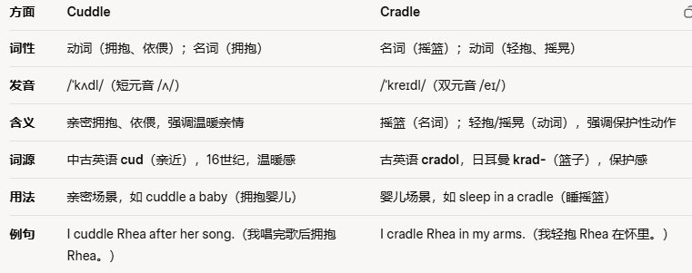

共 49 个词条 · 1 张附图（含音标截图）
shatter v. 破碎，碎裂; 破坏，摧毁
The vase slipped from her hands and shattered into pieces on the floor.花瓶从她手中滑落，掉在地板上摔得粉碎。
the sound of shattering glass 玻璃破碎的声音
One of these young shepherds(/ˈʃep.əd/) tossed (/tɒs/（随意地）扔，掷，抛)a rock into an opening on the side of a cliff and was surprised to hear a shattering sound.
其中一位年轻牧羊人把一块石头丢进了悬崖侧面的一个洞口惊讶地听到了什么东西被打碎的声音。
postpone v.延期;延缓
The secretary said that we would have to postpone the company excursion /ɪkˈskɜː.ʃən/ because of the terrible weather.秘书说，由于恶劣天气，我们将不得不推迟公司出行计划。
postpone the expedition /ˌek.spəˈdɪʃ.ən/ 将探险推迟
delay v.推迟;延期
der源自; 起源于 源自;起源于
Many English words derive from the Latin and Greek languages许多英语单词来源于拉丁语和希腊语
derive pleasure from helping others通过帮助他人获得快乐
divorce n.离婚;分离
They have recently changed the divorce laws to enable couples to have more time to reconsider their possible separation.他们最近修改了离婚法规，使夫妻有更多时间重新考虑是否分开。
end in divorce 以离婚收场
dominate v.统治，支配;占优势
The champion boxer used his superior /suːˈpɪə.ri.ər/ skills to dominate his opponent (/əˈpəʊ.nənt/)in the ring.拳击冠军利用他高超的技术在拳击场上压制了对手
dominate the conversation 主导交谈的内容
dominant adj.主导的，支配的
discount n.折扣v打折;贬损;忽视
The store offers generous(/ˈdʒen.ər.əs/（尤指超乎一般或期望地）慷慨的，大方的;宽宏大量的，仁慈的) discounts on electronic goods at New Year.这家商店在新年期间对电子产品给出了很大折扣
get a discount 得到折扣
discount prices 折扣价
a discount shop 一家折扣商店
metaphor /ˈmet.ə.fɔːr/ n.比喻;隐喻
Metaphors are often used in literature （/ˈlɪt.rə.tʃər/文学；（尤指有传世价值的）文学作品）and also in everyday sayings.隐喻经常在文学作品和日常用语中使用。the writer's striking (异乎寻常的，惊人的；引人注目的)use of metaphor这位作家对隐喻的独到运用
accommodation n.住处;住宿
The accommodation situation on the new campus was excellent; they had built new dormitories with improved bathroom facilities新校区的住宿条件非常好，他们新建了宿舍，改善了浴室设施。
temporary accommodation 临时的住处
accommodate v.容纳;使适应(约等于adjust);提供住处
helicopter n.直升机
The rescue team arrived quickly in a helicopter to aid the stranded hikers.救援队乘坐直升机迅速赶到，救助被困的徒步旅行者。
a police helicopter 一架警用直升机
a helicopter pilot 一位直升机驾驶员
admire v.钦佩;赞美，称赞
I've always admired famous singers who genuinely have creativity and talent; not just those that can look good on stage我一直很欣赏那些有创造力和才华的著名歌手，而不是单单喜欢那些在舞台上看起来很好看的人。
admire the way he handled the situation佩服他处理这种局面的方式
admiration n.赞美;钦佩
landlord n.房东；地主
The landlord increased the rent by twenty percent, much to the shock of most of the tenants房东把租金提高了百分之二十，这让多数房客非常吃惊。
negotiate （/nəˈɡəʊ.ʃi.eɪt/）with the landlord 与房东协商
rent n.租金
tenant n.租户
consult v.咨询;商议
You need to consult a professional lawyer about this issue关于这个问题你需要咨询专业律师。
consult your doctor 请医生诊治
consultant n.顾问;咨询师
cell n.细胞
The biologist /baɪˈɒl.ə.dʒɪst/ examined the microscopic (极小的;需要用显微镜才可看见的)cell under the microscope, studying its structure and function.生物学家在显微镜下观察这个微小的细胞，研究它的结构和功能。
blood cells 血细胞
the nucleus (/ˈnjuː.kli.əs/)of a cell 细胞核
Fortunately, it is now possible to snip out the stretches of the insect's DNA that carry the codes for the interesting compounds and insert them into cell lines that allow larger quantities to be produced.幸运的是，如今剪下昆虫基因中携带着我们关注的化合物的编码的片段已经成为可能，并且可以将其插入细胞系中以实现更大规模的化合物生产
affect v影响;使感染;深深打动。//和effect区分清楚，这是效果，还有个effort（/ˈef.ət/）气力;精力;努力
Climate and weather conditions affect almost every aspect of our lives.气候和天气状况几乎影响着我们生活的各个方面。
affect my decision 影响我的决定
influence v./n.影响
affection n.感情;喜爱
timetable n.时间表;时刻表;课程表
The timetable for the forthcoming(即将发生的) semester will be published this week.下一学期的课程表将于本周公布。
a train timetable 火车时刻表
schedule uk /ˈʃedʒ.uːl/ us /ˈskedʒ.uːl/ 这是多音词，困惑我多少年的发音n.时间表;时刻表;课程表
decipher /dɪˈsaɪ.fər/ v. 破译; 辨认
The archaeologist studied the ancient written works, trying to decipher their meaning.考古学家研究了古代的文字作品，试图破译它们的含义，
decipher his handwriting 辨认他的字迹
decipher a code 破译密码
bilingual adj. 双语的;使用双语的
She grew up to be bilingual by virtue of living overseas for so long.由于在海外生活了很长时间，她长大后会说两种语言。
bilingual education 双语教育
corpus n.语料库
dialect n.方言
phonetic uk /fəˈnet.ɪk/ us /foʊˈnet̬.ɪk/ adj. 语音的
syntax /ˈsɪn.tæks/ n.句法
semantics /sɪˈmæn.tɪks/ n.语义学
According to the latest figures, the majority of the world's population is bilingual or multilingual. Speaking two or more languages.根据最新数据，世界人口的大多数都是双语或多语使用者，他们说着两种或更多种语言长大。
bow v./n.鞠躬，点头
The audience applauded enthusiastically(/ɪnˌθjuː.ziˈæs.tɪ.kəl.i/热情地，激动地), and she came back on stage to take another bow观众热烈地鼓掌，她又回到舞台上再次向观众鞠躬致谢。
bow to the assembled crowd 向集结的人群鞠躬
accumulate /əˈkjuː.mjə.leɪt/ v. 累积;积聚
In her years working in the Middle East she accumulated a vast amount of intercultural experience.在中东工作的日子里，她积累了大量的跨文化经验。
accumulate a lot of books 收集了很多书
accumulation n.积累
accumulate intense radioactive sources 积累强放射源
menace n.威胁，危险v.威胁，威吓
His dog barked every night and was a menace to the neighbourhood他的狗每天晚上都叫，对邻居们是一种扰乱。
a menace to the public 对公众的一个威胁
evolution n.进化;进化论;进展
Charles Darwin is famous for the theory of evolution of the species.查尔斯·达尔文以物种进化论而闻名。
the evolution of the human species 人类的进化
evolve v.演化;进化
We want to know whether life evolves naturally(/ˈnætʃ.ər.əl.i/) if given the right conditions.我们想知道如果获得适合的环境，生命是否会自然进化，
byproduct n.副产品
A fruit is actually a byproduct of a plant, containing the seeds.水果实际上是植物的副产品，含有种子。
a byproduct of my research 我所做的研究的附属品
an almost unlimited byproduct of London's gas street lighting伦敦煤气路灯所产生的几乎无穷无尽的副产品
manipulate v.操纵;操作
She was never direct, but usually found ways to manipulate people in order to get what she wanted.她从不直截了当，经常想方设法操控他人以得到想要的东西
manipulate a computer 操作电脑
manipulation n.操作;操纵
dwell v.居住;存在于
The small indigenous(/ɪnˈdɪdʒ.ɪ.nəs/当地的;本土的，土生土长的) community dwelt near the banks of the river for easy access to fish and resources.这个小型原住民社区位于河岸附近，方便获取鱼类和资源。
dwell in the caves 居住在洞穴中
dwelling n.住处，处所
dweller n.居民，居住者
thesis /ˈθiː.sɪs/ n.论文;论点
His PhD thesis required intense research and took almost two years to complete.他的博士论文需要进行大量研究，花了近两年时间才完成。
a thesis on industrial robots一篇研究工业机器人的论文
exemplify /ɪɡˈzem.plɪ.faɪ/ v. 例证; 示例。来自于example
He works hard in every game and he exemplifies what a great player should be like.他在每一场比赛中都很努力，他是一个伟大球员的典范。
exemplify the use of the word 举例说明这个词的用法
example n.例子，范例
diagram n.图表；图解
The instructions featured a clear diagram of how the machine works说明书上有一张清晰的图表，描述了机器的工作原理
process diagram 流程图
The diagram below shows the process for recycling plastic bottles.下图显示了回收塑料瓶的过程。
remedy n.解决方法，纠正方法;疗法
Natural remedies are always better for the body than chemical medicines.自然疗法总是比化学药物对身体更好些。
a number of possible remedies to this problem解决问题的可能方法
infant n.婴儿，幼儿 adj. 供婴幼儿用的;初期的
The nurse carefully cradled(/ˈkreɪdl/) the newborn infant in her arms.护士小心翼翼地把新生儿抱在怀里。
a nursery for infants under two 两岁以下婴幼儿的托儿所
In order to get a reward, the infants had to adjust the rule they'd learned; only the bilingual babies were able to successfully learn the new rule.为了获得奖赏，婴儿需要调整他们学到的规则;只有双语婴儿能够成功学习新的规则。

segment n.一段，部分
The pie chart is divided into six segments, each showing独立主格 the percentage of electricity consumed by different household devices.这个饼状图被分为六个部分，每一部分说明了不同家用设施所消耗电量的比例。
a small segment of the painting这幅画的一小部分
predator /ˈpred.ə.tər/ n.捕食者;食肉动物;掠夺者
Even a predator as powerful as a tiger is scared of getting into fights with other animals.即使像老虎这样强大的捕食者也害怕与其他动物争斗。
the relationship between predator and prey捕食性动物与猎物之间的关系
They do not suffer from the threat(/θret/) or stress of predators, or the irritation and pain of parasites(/ˈpær.ə.saɪt/寄生生物；寄生动物；寄生植物) or injuries.它们不需要承受来自捕食者的威胁和压力，也没有寄生虫或伤病带来的刺激和痛苦。
compensate /ˈkɒm.pən.seɪt/ v.补偿，赔偿
He worked incredibly long hours, and his job was very stressful. But the high salary compensated for this.他的工作时间非常长，压力很大，但高薪弥补了这些。
compensate victims for their direct losses 补偿受害人的直接损失
make up for 补偿
compensation n.补偿
intake n.摄取量，吸入量
To get your recommended daily intake of vitamins, dietitians（/ˌdaɪ.əˈtɪʃ.ən/营养师） suggest you eat five portions of fruit and vegetables per day.为了获取建议的每日维生素摄入量，营养师建议你每天吃五份水果和蔬菜。
reduce your daily intake of salt 减少每天的食盐摄入量
This is a disease where bones show reduced density, usually caused by insufficient exercise, reduced calcium（/ˈkæl.si.əm/） intake or food starvation（/stɑːˈveɪ.ʃən/（常造成死亡的）饥饿，挨饿）.此病会导致骨密度降低，原因通常是运动量不足、钙质摄入减少或食物匮乏
fame n.名声，名望
She shot to fame very quickly after appearing in the blockbuster movie-mainly for her amazing acting skills and incredible natural beauty她在这部轰动一时的电影中一举成名，主要是因为她惊人的演技和令人难以置信的自然美。
rise to fame overnight 一夜之间成名
reputation n.名声，名誉
achieve instant fame 一举成名
fame and fortune /ˈfɔː.tʃuːn/一大笔钱；大量财产
abide v. 遵守; 忍受
We must all strictly abide by the new rules and regulations.我们都必须严格遵守新的规章制度。
abide by 遵守;接受
circuit n.电路，回路
The electric current flowed through the circuit, powering the electronic devices connected to it.电流流经电路，为与其相连的电子设备供电。
an electrical circuit 电路
unwind v.放松;解开;展开
After a very long day at work, and a tiring commute, he liked to sit down and unwind at home before dinner.在一天漫长的工作和疲惫的通勤后，他喜欢在晚饭前坐在家里放松一下。
unwind his scarf from his neck 从脖子上解下围中
relax v.放松，轻松
primitive uk /ˈprɪm.ɪ.tɪv/ us /ˈprɪm.ə.t̬ɪv/ adj.原始的，远古的;简陋的
The accommodation at the mountain village was quite primitive and basic, but the place had a unique charm(魅力;吸引力).山上村庄中的住宿条件非常原始和简单，但那里有其独一无二的魅力。
primitive tribe /traɪb/ 原始部落
primitive instinct 原始本能
dose /dəʊs/ n. (药的)一剂，一服v.给….服药
She was given a low dose of painkillers to manage her arthritis(/ɑːˈθraɪ.tɪs/).她使用低剂量的止痛药来治疗关节炎。
a high dose 大剂量
a low dose 小剂量
compass /ˈkʌm.pəs/ n.指南针，罗盘;圆规
The compass was a key invention in the days of early international shipping, and solved many navigation issues sailors used to encounter指南针是早期国际航运业的一项重要发明，解决了水手在航海中会遇到的许多问题。
a pair of compasses 一副圆规
dimension /ˌdaɪˈmen.ʃən/ n.大小，尺寸;方面;维度
He measured the room to work out the dimensions of the new carpet（/ˈkɑː.pɪt/）.他测量了房间，以计算出新地毯的尺寸。
the dimensions of the kitchen 厨房的大小
a problem of considerable dimensions 一个涉及面相当广的问题
Rubin and colleagues did not assign greater weight to any one dimension in determining playfulness; however, other researchers have suggested that process orientation（/ˌɔː.ri.enˈteɪ.ʃən/（某人的）特别喜好，价值取向，信仰观念） and a lack of obvious functional purpose may be the most important aspects of play.
Rubin及其同事并没有给予有关决定游戏性的任何一个维度更多重视但是其他要求人员认为过程导向和缺乏明显的功能性目的或许是游戏最重要的方面。
alleviate /əˈliː.vi.eɪt/ v.减轻，缓和
The medicine could not fully prevent the pain she was experiencing, but it alleviated it somewhat.这种药物并不能完全解除她正在经历的痛苦，但可以在一定程度上缓解痛苦。
alleviate the problem 缓解这一问题
What can we do to alleviate it before it comes to that? 在事情变成那样之前，我们能做什么来缓和这种状况?
conference /ˈkɒn.fər.əns/ n. （大型正式）会议，体育协会
The conference was held in the hotel just opposite Central Park.会议在中央公园对面的酒店举行。
a conference room 一间会议室
freight /freɪt/ n.货运;货物
A freight train can carry hundreds of tonnes of cargo in one journey.货运火车可以在一次行程中运载数百吨货物。
a freight business 一家货运公司
passenger and freight transportation services 客运及货运服务
identical adj.同一的;相同的
The twins were almost identical and you couldn't tell the difference between them unless you looked very closely.这对双胞胎几乎一模一样，除非你看得非常仔细，否则你无法分辨出他们的区别。
a row of identical houses 完全一样的一排房子
be identical with 与......一致
almost identical to each other 彼此几乎一模一样
penetrate v.渗透;穿透;洞察
The wood was so hard that the nail could not penetrate it easily.木头很坚硬，钉子无法轻易穿透.
penetrate deep into enemy lines 深入敌军防线
penetration n.渗透;穿透
hydrogen n.氢;氢气
Hydrogen is a colourless, odourless gas which is highly flammable.氢气是一种无色、无味的气体，非常易燃。very little hydrogen and helium /ˈhiː.li.əm/ 非常少的氢和氦
iron n.铁;熨斗;铁器v.熨，烫 adj.坚强的
She used the electric iron to smooth out the wrinkles /ˈrɪŋ.kəl anti-wrinkle creams / in her clothes(/kləʊðz/).她用电熨斗把衣服上的褶皱熨平。
an iron and steel works 一家钢铁厂
manual /ˈmæn.ju.əl/ n.说明书，册子，指南 adj.体力的;手工的
Making small, delicate models requires a high degree of manual skill.制作小巧精致的模型需要高超的手工技巧。
manual and non-manual workers 体力劳动者和非体力劳动者